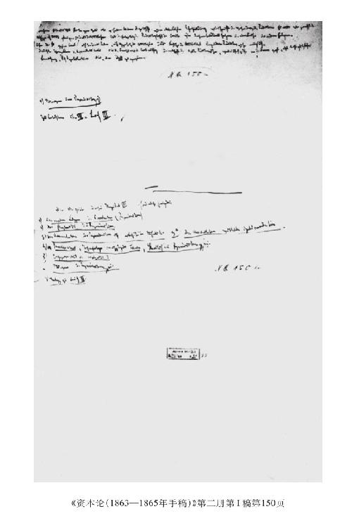

[146]（8）必要劳动和剩余劳动（剩余产品）
我们已经看到，不管我们是考察单个资本还是社会资本，必要劳动对工人来说体现在工人用工资（假定工资等于劳动能力的价值，或者说等于劳动的价值）买回来的那部分总产品中，而无酬劳动体现在与表现这个无酬劳动的价值相等的那部分产品中。对工人本身来说，必要劳动表现在生活必需品上，对资本家来说，剩余产品表现在这样一些产品上，这些产品一部分由生活必需品组成，一部分由奢侈品组成，一部分形成用于扩大再生产的积累基金。（资本家同工人一样，可以用他们得到的并作为收入来消费的一部分产品同服务相交换，不管他们是否情愿，他们必须对这种服务支付报酬。）总产品的这两个部分加在一起，只是总产品中由新加劳动新加进来的价值所决定的部分。总产品中只代表由过去劳动生产出来的产品价值部分的那个部分会变小。
通过新加（一年内）劳动来保存只代表不变资本的那部分产品的价值和使用价值。
虽然对工人来说，他的必要劳动只表现在生活必需品上，而对资本家来说，剩余劳动只表现在剩余产品上，但是，如果考察再生产过程本身，这种新加劳动的一部分就表现在生产资料上，另一部分则表现在生活资料上。
从整个再生产过程的角度来看，事情还可以用另一种方式表达。
对于那些直接生产生活必需品的工人，以及那些再生产这些生活必需品的生产中所消耗的不变资本（因此，也保存不变资本的再生产中所消耗的那部分不变资本）的工人来说，他们的一部分劳动是有酬劳动（必要劳动），另一部分是无酬劳动或剩余劳动。如果考察整个社会，他们的劳动就是必要劳动；也就是说，表现在不断地以原有规模再生产出整个工人阶级加上资本家阶级（这里包括其他一切作为他们仆役的非劳动者）所必需的总产品（以及属于这方面的生产资料）上。从社会的角度来看的这种必要劳动，已经包含着社会中就业的那部分工人的全部剩余劳动，并且表现在这样一些剩余产品上，依靠这些剩余产品过活的，既有其他的工人（他们在劳动交换中什么也不给予上述那部分工人，因为他们的生产既不间接也不直接进入生活必需品的生产），也有资本家以及得到自己生活必需品即必要生活资料的仆役。
至于工人阶级本身，如果考察全社会的再生产过程，那么我们不能对工人阶级的有酬劳动和无酬劳动，或者说必要劳动和剩余劳动，计算两次。例如我们假定，200个工人每人劳动12小时，因而总共劳动2 400小时，或者说200个12小时工作日。假定其中1/2是有酬工人，1/2是无酬工人。其次，如果100个工人被雇用来生产生活必需品（间接地或直接地从事这种生产，或是直接生产生活资料，或是生产这些生活必需品的生产中所必需的原料、辅助材料和固定资本），而100个工人被雇用来生产剩余产品，那么这就如同下述情况一样：100个工人或100个工作日只提供必要劳动，因为全部有酬劳动等于一部分工人的50个工作日加上另一部分工人的50个工作日，而100个工人则只从事剩余产品的生产。如果把200个工人作为一个阶级，作为整体，那么也会出现同样的情况：似乎他们的半数即100个人每天一道只为再生产自己的生活必需品而劳动1 200小时，另外100个人每天只为再生产剩余产品而劳动1 200小时。前100个人生产出生活必需品，为自己和为另外100个工人完成必要劳动，后100个人为自己和为另外100个工人完成剩余劳动；一批人完成整个阶级的必要劳动，有酬劳动；另一批人完成整个阶级的剩余劳动，无酬劳动。最后，我们假定，100个工人被雇用来为自己和整个资本家阶级生产生活必需品。在这种情况下，150个工人＝50个工作日(1)每天只生产工人阶级的生活必需品，而[147]150个工人无酬地（只为资本家）劳动，于是他们的剩余产品的1/3代表资本家所消费的生活必需品，而2/3代表剩余。因为我们曾经假定，第二批100个工人只为自己和整个资本家阶级生产生活必需品，所以我们在以后的叙述中可以完全不考虑他们〔只是不要忘记，除了表现在奢侈品和积累基金上的100个工作日的剩余产品以外，还存在另外的50个工人的剩余产品，它们表现为资本家阶级的生活必需品，不过这些与我们的研究无关〕。
现在，为了研究这些剩余产品的哪种消费方式适合于资本主义生产方式的本质，我们先假定积累基金等于零，从而剩余产品完全不进入积累基金，然后假定奢侈品等于零，从而全部[剩余]产品形成积累基金。
如果全部剩余产品以奢侈品的形式被消费，那么是在这样的物品上被消费的，这些物品在最终形式上作为生活资料不构成可变资本的任何部分，而且，就它们是制造这些奢侈品（大部分是珍珠、金等等）的生产资料来说，它们也不能充当其他产品的生产资料；即使它们也可以被用于这一目的，它们也不会被这样来用。因此，积累基金等于零。但是积累基金是必要的，一方面是作为准备金应付生产遭受到的危险，一方面是为了人口的增长，一方面因为资本主义生产方式是建立在生产规模的不断扩大上的。如果没有这种基金，不仅简单再生产会受到威胁，而且连作为价值增殖过程本身的动因和动机，从而作为为生产而生产（在一定的限度内）的动因和动机的资本主义生产精神也熄灭了。代之而起的，是享受本身被看做最终目的。因此，这样消耗剩余产品是与资本主义生产方式的条件和精神相矛盾的。其次，由此可以清楚地看到，越多消耗剩余劳动和剩余产品，直到接近于积累基金等于零的极限，就越不适合于资本主义生产方式。但是，在重商主义者和重农主义者这些资本主义生产方式的最初解释者那里，我们可以看到对这种消费的赞扬。这可以由如下情况来解释。首先说重商主义者。资本家阶级当时力量还弱，尚未成年。主要财富还掌握在封建主和专制君主手中。他们的挥霍，是商人、工厂主和金融家发财致富的直接手段，是封建主阶级转化为新形成的资本家阶级的手段，同时也是封建主阶级丧失政治权力和政治权力转移的手段。由此，在重商主义者那里产生了在当时是正确的本能。在基督教国家，特别是在英国和荷兰，整个民族充满了商业精神，经济的繁荣建立在新形成的世界市场上，发财致富被看做是目的本身，重商主义者宣传节欲、俭省，愤怒地反对挥霍，只愿意当帮手去推动别的国家浪费，而自己则想成为财宝贮藏者。特别宣扬挥霍的是法国重商主义者，而这是同资本家阶级在法国的发展联系在一起的。
重农主义者的情况完全不同。按照他们的学说，全部剩余产品掌握在土地所有者手中，而不是掌握在资本家手中。土地所有者得到的剩余产品最初是货币形式上的预付。如果他们没有把它全部消费掉，那么租地农场主等等的一部分商品资本就卖不出去，从而年再生产就会发生困难，而在重农主义者看来，年再生产构成真正的财富。其次应当注意到，在重农主义体系中，土地所有者手中所掌握的剩余产品：（1）必须补偿全部国家支出；（2）补偿宗教（学校）方面的支出；（3）土地所有者的职能是，他们必须把自己的一部分剩余产品花费在农业中较长期的固定投资上；（4）租地农场主在利息形式上从他们那里取走一部分剩余产品。
只有在热·加尔涅302（督政府和波拿巴的人）和加尼耳303那里，重商主义者和重农主义者关于（非生产）消费的观点才接近起来。
亚·斯密表现出资本主义生产的真正精神，他宣布积累（规模不断扩大的再生产）是最高规律；但他还是按照与当时那样一个社会发展阶段相符合的方式（在某种程度上是郑重其事地并且以旧式的风格）来这样做的，那时资本主义生产方式还刚刚开始建立自己特有的生产资料（机器等等），国家还没有完全隶属于资本主义生产方式，而经营大[148]工业所必需的资本还处在幼年时期；因此，这种资本的增长表现为必然的事；此外，那时商业资本家与工业资本家相比还占着很大优势。亚·斯密宣传节约。他对国家的挥霍浪费表示不满。他把生产工人人数最大限度的增长看做是所有健康的经济的最终目的。这样，他描绘了他对生产工人的善意，这种善意在他那里一直延伸到公牛身上，把公牛看成生产工人。而且他相信（这一点对当时的发展水平来说在某种程度上也是正确的），随着剩余产品转化成生产资本，因而随着积累，对劳动的需求会增长，从而工资会提高，生产工人的状况会得到改善，与此同时，资本家由于不断提高劳动生产力而得到补偿。
如果说亚·斯密是向大工业过渡的工场手工业时期的经济学家，因而他主要是从中等资产者的角度来看积累，那么，李嘉图是大工业的经济学家，他是从大资产者的角度来看事物。为生产而生产，再生产最大可能地增长，特别是劳动生产力的增长，是最终的和决定性的目的。但是，李嘉图认为，为了这个目的没有必要宣传节约。既然资本主义生产方式对他来说是自然的和绝对的社会生产形式，而消费是一切生产的自然目的，那么，生产的自由发展必然包括一切形式的消费的发展，因此同资本一样，分为奢侈品的消费和其他产品的消费，是由资本主义生产的性质决定的，也就是说，是由利润率在不同资本之间的平均化决定的。李嘉图不再同意亚·斯密的下述偏见：对劳动的需求会随着积累的增长而增长，因而工资，也就是说工人阶级的生活条件，会相应地得到改善。相反他指出，如果随着积累和伴随着积累的大工业的发展，对劳动的需求绝对增长，那么?这种需求会相对减少，而且会形成经常的过剩人口。（一些人成为多余的。）生产的工人阶级在这里只是作为这样一种生产机器而存在，这种机器为劳动条件的占有者（即为资本家和地主私人）和以租税的形式为集体（即为国家所能支配的国民财富）而生产剩余价值或剩余产品。亚·斯密认为财富就是最大可能的生产工人人数，李嘉图与斯密不同，他相反地认为，与同一剩余产品和靠这个剩余产品为生的另一部分人口相比的尽可能少的生产人口，这只是劳动生产力得到最大限度发展的证明。说到奢侈品的消费，他甚至证明，对工人来说，地主消费这些奢侈品比资本家消费这些奢侈品更为有利，因为这些商品的消费会推动许多的工人，因为地主消费这些商品需要更多的食客、仆役等等，而头脑清醒的资本家却宁愿获得长久的奢侈品。因此，地主通过自己对非生产工人的需求也会影响劳动市场，地主通过自己的消费会比资本家更多地提高对劳动的需求。亚·斯密曾担心，数量大到不能容许地步的一部分生产工人会转化为非生产工人，这种担心对李嘉图来说已不存在，他知道，大工业会不断地创造出过剩人口，因此，他始终面临着充斥的劳动市场。
但是另一方面，地租即地主的收入随着积累一起发展起来，而这种情况阻碍着再生产和劳动生产力的发展。特别是（在李嘉图时代的英国）对农业实行的国家限制（通过谷物法）人为地提高了积累的这种作用。因此，第一条戒律就是：取消提高地租的这种国家原则，实行谷物自由贸易等等。李嘉图就是用这种方式为了资本而同土地所有权作斗争，并且力图以此来保证尽可能多的剩余产品落入工业资本家手中。利润是对生产的刺激，如果地租提高，利润率就会下降。因此，必须通过消除提高地租的人为手段来燃起追求积累的欲望，[149]而且使这种欲望保持应有的高度。就此而言，李嘉图是彻底的。但是，当他试图把这样造成的积累过程的某种程度的活跃，说成是工人阶级的利益时，他就变成不彻底的了，并且回到亚·斯密那里去了。
“但是，谷物价格相对低廉总会带来这样一种好处，即现有产品的分配在这种价格下可能增加维持劳动的基金，因为在利润的名义下归生产阶级〔资本家〕的部分将较多，而在地租的名义下归非生产阶级〔地主〕的部分将减少。（”李嘉图《政治经济学[和赋税]原理》[1821年伦敦第3版]第317页）
西斯蒙第感觉到了大工业的矛盾，坚决反对为生产而生产，反对生产力在这样一种生产方式的基础上绝对发展，在这种生产方式中，现有资本的价值增殖从另外一方面来说是最终目的。因此，他希望使一定条件下的一定消费成为生产的调节者。因此，他特别关心资本（从而生产消费）和收入的比例；虽然他在任何地方都没有对这个问题作出经济学上多少有些意义的发现。但是，收入同资本的交换以及收入同收入的交换，从而再生产的整个均衡性，经常由于剩余产品过多地再转化为资本而遭到破坏，这种再转化就是有积聚相伴随的积累，不断扩大机器和固定资本的使用，因而也就伴随有工人阶级状况的不断恶化。

马尔萨斯一方面追随西斯蒙第；一方面在他那里又冒出重农主义的传统，这种传统认为，非劳动阶级的消费基金实际上是与生产基金完全不同的基金，为了使它的再生产不致停顿，它必须被消费掉。但是，在马尔萨斯那里（与重农主义者不同，而且与李嘉图相反），具有决定意义的是：力图保护土地贵族、国教会、寡头官僚集团以及它们的所有非生产仆役不受另外的工业化主义的影响，并在经济学上为之辩护。这种情况就像是：“啊，他的胸中有两个灵魂，一个不愿同另一个分离！”304也就是说，在资本家的胸中积累欲和消费欲并存。这两种欲望是规模不断扩大的再生产所必需的。但是，这两种结合在一个人身上的欲望会互相损害。如果积累欲压倒了消费欲，这时就会出现生产过剩。如果消费欲压倒了积累欲，这时资本主义生产的精神和火焰就会熄灭。因此，这两种欲望必须分开，而在这种情况下，地主、教会和国家的消费欲越是迅速地得到它的满足手段，资本家的积累欲就越会得到热心的支持。不过，因为剩余生产在这个基础上必然同剩余消费结合在一起，所以在马尔萨斯的这种奇谈怪论中也有某种正确的东西。只是他忘记了，（1）国家在资产阶级手中要比在寡头统治者手中更浪费；（2）从工业资本家阶级中不断地分出一个不断追求消费的“货币阶级”；（3）地主阶级的地租的自然增长得到保证；（4）随着工业资本家的文明不断进步，他们和聪明的经济学一道学会了胡乱花钱。
第二，我们来看看另一极端，即（同前面一样，撇开生活必需品不谈）全部剩余产品以生产资本的形式再生产出来（或者相反的情况也一样，通过对外贸易进行交换），也就是，假定奢侈品的消费等于零。
在这里必然会出现生活必需品的相当多的生产过剩，因而会出现再生产的中断。剩余产品的任何部分都没有以奢侈品的形式生产出来（或者说，即使生产出来了，那也是同外国的生活必需品进行了交换，尽管下述说法是荒唐的：在没有奢侈品消费的国家，也会发展起生产奢侈品的必要兴趣等等）。当然，相当大一部分年剩余产品可能转化为——这在资本主义生产的高级阶段也是常有的事——固定资本，这种固定资本的生产要持续一年以上，而且很可能，它只有经过若干年才会发挥生产作用。但是它最终必然要如此发挥作用。而如果这种转化年年发生，那么最终必然会加大[150]生活必需品的剩余生产的损失。另一部分可能同别的国家的货币等等相交换。但是，单纯的货币储藏是同资本主义生产的本质相矛盾的。首先，对劳动的需求会增加，从而工资会提高。但是，劳动生产力的发展很快就会成为这种增长的障碍，危机就会一次接着一次地发生。
如果没有大量的奢侈品，那么建立在工人阶级和劳动资料占有者对立基础上的任何生产方式都不可能长时期存在。
然而，积累欲压倒消费欲是必要的，并且是同资本主义生产方式相适应的，尽管这也部分地表现为如下的形式：通过投机等等，力求突然发财致富，以便以后来享受。
(1) 手稿中原文如此，可能是笔误。——编者注
302 指热·加尔涅对他自己出版的亚·斯密著作所作的注释。加尔涅《译者注释》，载于亚·斯密《国民财富的性质和原因的研究》加尔涅的新译本（附译者注释和评述）1802年巴黎版第5卷。关于加尔涅的论点，可参看马克思《政治经济学批判（1861—1863年手稿）》第IX笔记本第415页。——581。
303 见沙·加尼耳《论政治经济学的各种体系及其学说的比较价值和其中最有利于财富增长的学说》1821年巴黎版第1—2卷。马克思在《政治经济学批判（1861—1863年手稿）》第IX笔记本第379页中谈到了加尼耳的有关论点。——581。
304 这里套用了歌德的悲剧《浮士德》第1部分第2场《城门之前》中的一句话。——584。